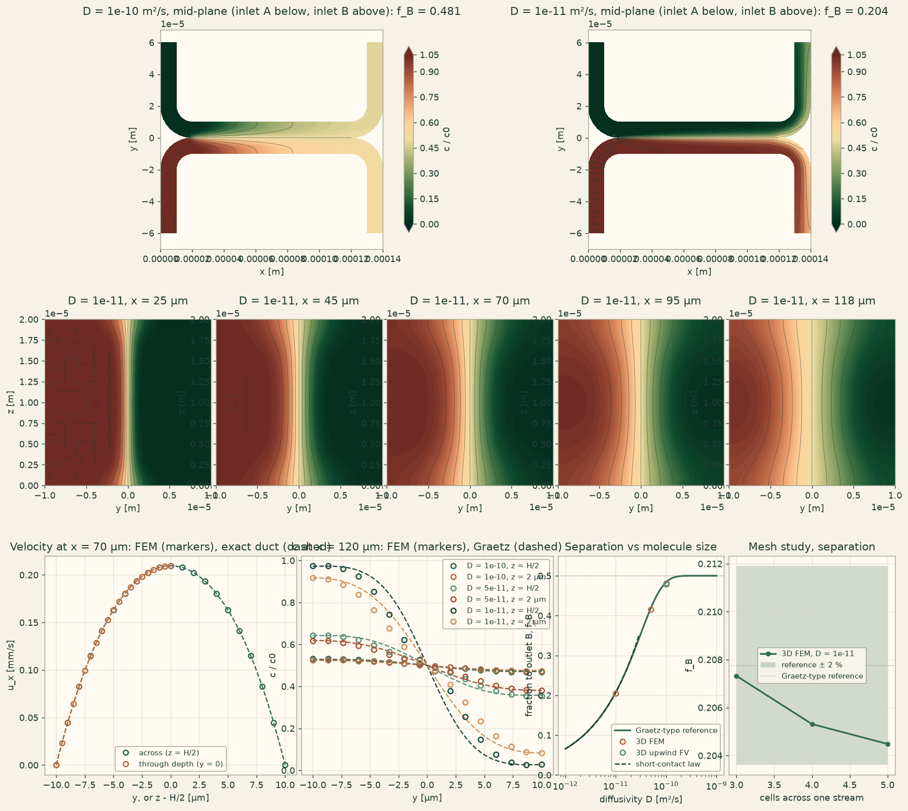

Docs › Examples › Diffusion separator in a microchannel H-cell
Microfluidics · 3D
Diffusion separator in a microchannel H-cell
Two streams run side by side through an H-shaped microchannel: small molecules diffuse across, large ones stay, which separates them without a membrane.

What it computes
OneSimulation solves the 3D Stokes flow with Taylor-Hood elements and then steady convection-diffusion of three species of different diffusivity with quadratic elements, with a cell-centred finite-volume upwind solve as a second method, on a half-depth model with exact bends.
What it checks
The duct velocity matches the exact Fourier series to 1e-5, species and solvent are conserved to 1e-5, and the separated fractions agree with a Graetz eigenfunction solution within 0.6-1.7 % for the reasons stated in the notebook.
The notebook
The complete notebook, cell by cell. Run it to produce the figures and the comparison printout.
The H-cell (a design formulated by A. Witarsa and B. A. Finlayson, University of Washington, for the evaluation of microfluidic diffusion separators; the "H-filter" of J. P. Brody and P. Yager, Sensors and Actuators A 58, 13, 1997) brings two laminar streams into contact for a controlled time. Stream A carries a solute at \(c_0=1\,\mathrm{mol/m^3}\), stream B pure water. Both enter through the left arms, run side by side through a straight contact zone and are split again into the two right arms. Because the Reynolds number is tiny, the streams do not mix by convection; the solute crosses the interface only by diffusion. Small molecules (large diffusivity \(D\)) reach outlet B in large amounts, large molecules (small \(D\)) stay in stream A: the cell separates by molecular size.
Geometry (all in micrometres). Every channel is \(10\) wide and \(20\) deep. Each arm is a straight \(40\) long channel followed by a quarter bend (inner radius \(10\), outer radius \(20\)); the four bends meet tangentially at the two ends of the \(100\) long, \(20\) wide contact zone, so the streams touch along a sharp edge without any upset of the flow. The mean inlet velocity is \(0.1\,\mathrm{mm/s}\), giving \(Re=\rho\,u\,d/\mu=10^{-3}\) for water with \(d=10\,\mu\)m. The diffusivities are \(D=10^{-10}\), \(5\cdot10^{-11}\) and \(10^{-11}\,\mathrm{m^2/s}\), i.e. Péclet numbers \(Pe=2\bar u W/D=20\), \(40\) and \(200\).
Equations. Steady incompressible Navier-Stokes flow, then the steady convection-diffusion equation of the dilute solute in that flow,
Numerical methods.
- Flow: continuous Galerkin finite elements, Taylor-Hood P2/P1 tetrahedra (quadratic velocity, linear pressure), Newton iteration with a sparse direct LU solver.
- Solute: continuous Galerkin finite elements with quadratic (P2) Lagrange tetrahedra and the computed velocity field, solved with Newton/sparse LU (one step, the problem is linear). The steep gradients are across the streams, where convection does not act; the mesh Péclet number along the streams is moderate, so the quadratic Galerkin solution stays essentially bounded without added stabilisation (its over- and undershoot is printed).
- Contrast: the high-diffusivity case is also solved with cell-centred finite volumes on the same tetrahedra, with upwind-biased second-order convective fluxes (linear upwind reconstruction from least-squares cell gradients) and central two-point diffusion, solved with sparse LU.
The solute equation is solved with OneSimulation's convection-diffusion operator ConvectiveHeatTransfer, which is the same equation: with unit volumetric capacity \(\rho c_p=1\) and "conductivity" \(k=D\) its unknown is the concentration.
Reference.
- Flow: the exact fully developed velocity in a rectangular duct (Fourier series; R. K. Shah and A. L. London, Laminar Flow Forced Convection in Ducts, Academic Press 1978, Ch. VII) in the arms and in the contact zone, the flow split and the flow rate.
- Solute: a Graetz-type eigenfunction expansion of the parallel-flow problem in the contact zone, \(u(y,z)\,\partial c/\partial x=D(\partial^2_y+\partial^2_z)c\) with the exact duct velocity and the step \(c=1\) (\(y<0\)), \(c=0\) (\(y>0\)) at the start of the contact zone (the classical T-sensor/H-filter analysis of A. E. Kamholz, B. H. Weigl, B. A. Finlayson and P. Yager, Anal. Chem. 71, 5340, 1999). For small \(D\) it approaches the short-contact similarity law \(\dot m_B=c_0\int\sqrt{D\,u_i(z)\,L/\pi}\,dz\) (diffusion across the interface moving with the local interface velocity \(u_i\); R. F. Ismagilov et al., Appl. Phys. Lett. 76, 2376, 2000). The reference neglects the merging and splitting of the streams at the two ends of the contact zone and axial diffusion, so it is expected to agree with the full 3D result to one or two per cent, not exactly; the merging zone shortens the effective contact slightly, so the 3D separation should lie a little below the reference, most visibly for small \(D\).
- Mass balance of the solvent and of the solute through all four arms, and a three-level mesh study with observed order and Richardson estimate.
import time
import numpy as np
from scipy.linalg import eigh
from onesim.cad.d2 import Plane
from onesim.materials import IsotropicSolid, NewtonianFluid
from onesim.meshing import Block, Geometric, arc, extrude, line, merge_blocks, rectangle_block
from onesim.numerics import Numerics
from onesim.numerics.fem import FiniteElement, GalerkinAdvection, Lagrange, TaylorHood
from onesim.numerics.fvm import CentralDifference, FiniteVolume, LeastSquaresGradient, LinearUpwind
from onesim.numerics.linear import SparseDirect
from onesim.numerics.nonlinear import Newton
from onesim.physics.heat_transfer import ConvectiveHeatTransfer, FixedTemperature, HeatFlux
from onesim.physics.hydrodynamics import (
FixedVelocity, FlowTraction, FreeSlipLaw, IncompressibleNavierStokes, NoSlipWall, WallShear,
)
from onesim.results.comparisons import convergence
from onesim.results.derived import derived_field
from onesim.results.integration import integrate_plane
from onesim.simulation import Problem, Simulation
from onesim.simulation.initial_conditions import InitialValue
from onesim.visualization import theme, plots
theme.set()Parameters
UM = 1e-6
W = 10 * UM
H = 20 * UM
L_ARM = 40 * UM
R_IN, R_OUT = 10 * UM, 20 * UM
X0, X1 = 20 * UM, 120 * UM
L_CONTACT = X1 - X0
u_in = 1.0e-4
rho, mu = 1000.0, 1.0e-3
c0 = 1.0
diffusivities = (1e-10, 5e-11, 1e-11)
levels = (3, 4, 5)
Q_in = u_in * W * H
print(f"Re = rho u d / mu = {rho*u_in*W/mu:.1e}; inlet flow rate {Q_in*1e18:.1f} um^3/s per arm")
for D in diffusivities:
print(f"D = {D:.0e} m^2/s: Pe = 2 u W / D = {2*u_in*W/D:5.0f}, contact time L/u = {L_CONTACT/u_in:.1f} s, "
f"diffusion length sqrt(D L/u) = {np.sqrt(D*L_CONTACT/u_in)/UM:.2f} um")
def duct_velocity(s, z, a, b, mean, terms=60):
"""Exact fully developed velocity in a rectangular duct 0<s<a, 0<z<b with the given mean."""
s, z = np.asarray(s, float), np.asarray(z, float)
n = 2 * np.arange(terms) + 1
coeff = 1.0 / (n[:, None] * n[None, :] * ((n[:, None] / a) ** 2 + (n[None, :] / b) ** 2))
norm = np.sum(coeff * 4 / (n[:, None] * n[None, :] * np.pi**2))
Ss = np.sin(np.pi * np.multiply.outer(s, n) / a)
Sz = np.sin(np.pi * np.multiply.outer(z, n) / b)
return mean * np.einsum("...i,ij,...j->...", Ss, coeff, Sz) / normGeometry and mesh
Only the lower half of the depth, \(0\le z\le H/2\), is computed; the mid-plane \(z=H/2\) is a symmetry plane, as in the original model. The H-shaped section is covered by structured quadrilateral blocks: the straight arms, the four quarter-annulus bends (exact circular arcs at the nodes) and the two halves of the contact zone. All blocks share their node rows, so the mesh is conforming, and the cells across each stream are graded towards the interface (first cell one third of the last) where the concentration gradient is steepest. The section is extruded over the half depth with layers graded towards the bottom wall, and every prism is split into three tetrahedra by a conforming diagonal rule (Dompierre et al., Proc. 8th Int. Meshing Roundtable, 1999). The mesh is handed to UnstructuredSimplexMesh with named boundary faces.
Boundary conditions on every face:
| face | flow | solute | |---|---|---| | inlet A (lower left arm, \(y=-60\)) | fully developed duct profile, mean \(0.1\) mm/s | \(c=c_0\) | | inlet B (upper left arm, \(y=+60\)) | fully developed duct profile, mean \(0.1\) mm/s | \(c=0\) | | outlets A and B (right arms) | traction-free, \(\boldsymbol\sigma\cdot\mathbf n=0\) (\(p=0\)) | outflow: zero diffusive flux | | side walls and bottom \(z=0\) | no slip | no flux | | mid-plane \(z=H/2\) | symmetry: impermeable, shear-free | no flux |
def section_blocks(nw):
"""Planar blocks of the H-shaped section; the second block direction runs across a stream."""
n_arm, n_bend, n_contact = 2 * nw, int(round(1.6 * nw)), 5 * nw
across = Geometric(nw, ratio=3.0)
nodes = across.reference()
blocks = []
for sy, stream in ((+1, "b"), (-1, "a")):
for xc, sx, kind in ((X0, -1, "inlet"), (X1, +1, "outlet")):
centre = (xc, sy * R_OUT)
theta0 = -sy * np.pi / 2
theta1 = theta0 + sy * sx * np.pi / 2
at = lambda r, th: (centre[0] + r * np.cos(th), centre[1] + r * np.sin(th))
blocks.append(Block(arc(centre, R_OUT, theta0, theta1), line(at(R_OUT, theta1), at(R_IN, theta1)),
arc(centre, R_IN, theta0, theta1), line(at(R_OUT, theta0), at(R_IN, theta0)),
cells=(n_bend, nw), grading=(None, across)))
xs = np.sort(xc + sx * (R_OUT + (R_IN - R_OUT) * nodes))
ys = np.sort(sy * (R_OUT + L_ARM * np.linspace(0.0, 1.0, n_arm + 1)))
end = f"{kind}_{stream}"
blocks.append(rectangle_block((xs[0], ys[0]), xs[-1] - xs[0], ys[-1] - ys[0], (nw, n_arm),
grading=(xs, ys), names=(end if sy < 0 else None, None, end if sy > 0 else None, None)))
ys = np.sort(sy * W * nodes)
blocks.append(rectangle_block((X0, ys[0]), L_CONTACT, ys[-1] - ys[0], (n_contact, nw), grading=(None, ys)))
return blocks
def build_mesh(nw):
section = merge_blocks(section_blocks(nw), unnamed="walls").triangulated()
mesh = extrude(section, H / 2, Geometric(nw, ratio=2.0), names=("walls", "mid_plane"))
return mesh.geometry, meshModel
fluid = NewtonianFluid(density=rho, dynamic_viscosity=mu)
def inlet_velocity(x, y, z):
"""Fully developed duct profile in both inlet arms (flowing towards the contact zone)."""
x, y, z = (np.asarray(v, float) for v in (x, y, z))
u = duct_velocity(np.clip(x, 0, W), np.clip(z, 0, H), W, H, u_in)
return np.column_stack((np.zeros_like(u), -np.sign(y) * u, np.zeros_like(u)))
def no_traction(x, y, z):
return np.zeros((len(np.asarray(x)), 3))
def solve_flow(geometry, mesh):
model = IncompressibleNavierStokes(domain=geometry.domain(), material=fluid)
b = geometry.boundaries
problem = Problem(
name="H-cell flow", geometry=geometry, physics=(model,),
boundary_conditions=(
FixedVelocity(boundary=b.inlet_a | b.inlet_b, physics=model, value=inlet_velocity),
FlowTraction(boundary=b.outlet_a | b.outlet_b, physics=model, value=no_traction),
NoSlipWall(boundary=b.walls, physics=model),
WallShear(boundary=b.mid_plane, physics=model, law=FreeSlipLaw()),
),
initial_conditions=(InitialValue(model.velocity, (0.0, 0.0, 0.0)),),
)
newton = Newton(linear_solver=SparseDirect(), absolute_tolerance=1e-14, relative_tolerance=1e-10,
maximum_iterations=10)
result = Simulation(problem=problem, mesh=mesh, numerics=Numerics(
spatial=FiniteElement(element=TaylorHood()), nonlinear_solver=newton,
initial_guess={model.velocity: (0.0, 0.0, 0.0)})).solve_stationary()
return result.field(model.velocity), result.field(model.pressure)
def solve_solute(geometry, mesh, velocity, D, method="galerkin_p2"):
solute = IsotropicSolid(density=1.0, specific_heat_capacity=1.0, thermal_conductivity=D,
youngs_modulus=1.0, poisson_ratio=0.3, thermal_expansion_coefficient=0.0)
flow = lambda x, y, z: np.asarray(velocity.evaluate(np.column_stack((x, y, z))))
model = ConvectiveHeatTransfer(domain=geometry.domain(), material=solute, velocity=flow)
b = geometry.boundaries
problem = Problem(
name="H-cell solute", geometry=geometry, physics=(model,),
boundary_conditions=(
FixedTemperature(physics=model, boundary=b.inlet_a, value=c0),
FixedTemperature(physics=model, boundary=b.inlet_b, value=0.0),
HeatFlux(physics=model, boundary=b.outlet_a | b.outlet_b, value=0.0),
HeatFlux(physics=model, boundary=b.walls | b.mid_plane, value=0.0),
),
)
if method == "galerkin_p2":
numerics = Numerics(spatial=FiniteElement(element=Lagrange(order=2), convection=GalerkinAdvection()),
linear_solver=SparseDirect())
else:
numerics = Numerics(spatial=FiniteVolume(gradient=LeastSquaresGradient(), diffusion=CentralDifference(),
convection=LinearUpwind()), linear_solver=SparseDirect())
result = Simulation(problem=problem, mesh=mesh, numerics=numerics).solve_stationary()
return result.field(model.temperature)
def plane_flux(velocity, concentration, axis, value, span):
"""Volume flow and solute flow through a cross-section (both halves of the depth)."""
component = 0 if axis == "x" else 1
normal = np.eye(3)[component]
plane = Plane(origin=tuple(value * normal), normal=tuple(normal))
other = 1 - component
within = lambda p: (p[:, other] >= span[0] - 1e-12) & (p[:, other] <= span[1] + 1e-12)
volume_flow = integrate_plane(velocity, plane, component=component, within=within, subdivisions=4)
if concentration is None:
solute_flow = volume_flow
else:
carried = derived_field(velocity, lambda u, p: u[:, component] * np.asarray(concentration.evaluate(p)).ravel(),
name="solute_flux", unit="mol/m^2/s")
solute_flow = integrate_plane(carried, plane, within=within, subdivisions=4)
return 2 * float(np.asarray(volume_flow.value)), 2 * float(np.asarray(solute_flow.value))
ARMS = {"inlet A": (-40 * UM, (0, W)), "inlet B": (40 * UM, (0, W)),
"outlet A": (-40 * UM, (130 * UM, 140 * UM)), "outlet B": (40 * UM, (130 * UM, 140 * UM))}Solve
Three meshes with 3, 4 and 5 cells across each stream (and proportionally along the channel and through the half depth). On every mesh the flow and the low-diffusivity solute (\(D=10^{-11}\), the most demanding case) are computed; on the finest mesh also the two larger diffusivities and the finite-volume contrast for \(D=10^{-10}\).
runs = []
for nw in levels:
start = time.perf_counter()
geometry, mesh = build_mesh(nw)
velocity, pressure = solve_flow(geometry, mesh)
t_flow = time.perf_counter() - start
run = dict(nw=nw, geometry=geometry, mesh=mesh, velocity=velocity, pressure=pressure, solute={})
finest = nw == levels[-1]
for D in (diffusivities if finest else (1e-11,)):
run["solute"][D] = solve_solute(geometry, mesh, velocity, D)
if finest:
run["solute_fv"] = solve_solute(geometry, mesh, velocity, 1e-10, method="upwind_fv")
runs.append(run)
print(f"mesh {nw} cells across a stream: {mesh.cell_count:6d} tetrahedra; flow {t_flow:5.0f} s, "
f"total {time.perf_counter()-start:5.0f} s")
fine = runs[-1]Reference solutions
Graetz-type expansion. In the contact zone the reference concentration is expanded in the cosine modes \(\cos(p\pi s/2W)\cos(2q\pi z/H)\) (\(s=y+W\)), which satisfy the no-flux conditions at the walls and at the mid-plane. The Galerkin form of \(u\,\partial_x c=D\nabla_\perp^2 c\) is \(M\,\dot a=-D\,K a\) with the velocity-weighted mass matrix \(M\) (exact duct velocity, Gauss quadrature) and the diagonal Laplacian \(K\); the generalised eigenvalue problem \(K v=\lambda M v\) gives \(a(x)=\sum_n v_n e^{-D\lambda_n x}(v_n^{\mathsf T}Ma(0))\). The separation is the fraction of the solute that leaves through outlet B, \(f_B=\dot m_B/\dot m_{A,\rm in}\) (\(f_B=0.5\) means complete mixing). With 100 x 12 modes it is converged to better than \(10^{-7}\).
def graetz_reference(P=100, Q=12):
a, hz = 2 * W, H / 2
edges = np.linspace(0, a, 9)
gs, ws = np.polynomial.legendre.leggauss(30)
S = (edges[:-1, None] + np.diff(edges)[:, None] * (gs + 1) / 2).ravel()
WS = (np.diff(edges)[:, None] * ws / 2).ravel()
gz, wz = np.polynomial.legendre.leggauss(60)
Z, WZ = hz * (gz + 1) / 2, hz * wz / 2
SS, ZZ = np.meshgrid(S, Z, indexing="ij")
u = duct_velocity(SS, ZZ, a, H, u_in)
p, q = np.arange(P), np.arange(Q)
basis = np.einsum("ip,jq->ijpq", np.cos(np.pi * np.outer(S, p) / a),
np.cos(np.pi * np.outer(Z, q) / hz)).reshape(len(S), len(Z), P * Q)
weighted = (np.outer(WS, WZ) * u)[:, :, None] * basis
M = weighted.reshape(-1, P * Q).T @ basis.reshape(-1, P * Q)
norms = np.outer(np.where(p == 0, a, a / 2), np.where(q == 0, hz, hz / 2))
K = np.diag((((np.pi * p[:, None] / a) ** 2 + (np.pi * q[None, :] / hz) ** 2) * norms).ravel())
lam, V = eigh(K, M)
start = V.T @ np.einsum("ijk,ij->k", weighted, c0 * (SS < W))
to_b = np.einsum("ijk,ij->k", weighted, (SS > W).astype(float))
total = np.einsum("ijk->k", weighted)
def coefficients(D, x):
return V @ (np.exp(-D * lam * x) * start)
def fraction_b(D, x=L_CONTACT):
a_x = coefficients(D, x)
return (a_x @ to_b) / (a_x @ total)
def concentration(D, y, z, x=L_CONTACT):
modes = np.einsum("...p,...q->...pq", np.cos(np.pi * np.multiply.outer(np.asarray(y) + W, p) / a),
np.cos(np.pi * np.multiply.outer(np.asarray(z), q) / hz))
return modes.reshape(np.shape(y) + (P * Q,)) @ coefficients(D, x)
return fraction_b, concentration
graetz_fraction, graetz_concentration = graetz_reference()
def similarity_fraction(D):
"""Short-contact law: diffusion across the interface moving with the local velocity u_i(z)."""
z, wz = np.polynomial.legendre.leggauss(80)
z, wz = H / 2 * (z + 1) / 2, H / 2 * wz / 2
u_i = duct_velocity(W, z, 2 * W, H, u_in)
return 2 * np.sum(wz * np.sqrt(D * u_i * L_CONTACT / np.pi)) / (Q_in)Comparison with the reference
Flow. Fully developed velocity on the centreline of an arm (half-way along the straight part) and of the contact zone (half-way along it), the flow rate through the contact zone and through each arm, and the split between the two outlets, against the exact duct solution.
def centre_velocity(velocity, point, component):
return float(np.asarray(velocity.evaluate(np.array([point])))[0, component])
u_arm_exact = float(duct_velocity(W / 2, H / 2 - 1e-12, W, H, u_in))
u_contact_exact = float(duct_velocity(W, H / 2 - 1e-12, 2 * W, H, u_in))
print(" mesh u_max arm / exact u_max contact / exact Q contact / 2 Q_in outlet split B/A inlet pressure [Pa]")
for run in runs:
v = run["velocity"]
ua = centre_velocity(v, (W / 2, -40 * UM, H / 2 - 1e-12), 1)
uc = centre_velocity(v, (70 * UM, 0.0, H / 2 - 1e-12), 0)
qc = plane_flux(v, None, "x", 70 * UM, (-W, W))[0]
qa = -plane_flux(v, None, "y", *ARMS["outlet A"])[0]
qb = plane_flux(v, None, "y", *ARMS["outlet B"])[0]
run["p_in"] = float(np.asarray(run["pressure"].evaluate(np.array([[W / 2, -(R_OUT + L_ARM) + 1e-9, H / 2 - 1e-12]])))[0])
run["u_contact"] = uc
print(f" {run['nw']} {ua*1e3:.5f} / {u_arm_exact*1e3:.5f} mm/s ({ua/u_arm_exact-1:+.1e})"
f" {uc*1e3:.5f} / {u_contact_exact*1e3:.5f} mm/s ({uc/u_contact_exact-1:+.1e})"
f" {qc/(2*Q_in):.6f} {qb/qa:.6f} {run['p_in']:.4f}")Solvent and solute balance on the finest mesh: inflow through the two inlets against the outflow through the two outlets (all sampled on cross-sections half-way along the arms).
flows = {name: plane_flux(fine["velocity"], None, "y", *where)[0] for name, where in ARMS.items()}
q_in, q_out = flows["inlet A"] - flows["inlet B"], flows["outlet B"] - flows["outlet A"]
print(f"\nsolvent: inflow {q_in*1e18:.4f} um^3/s (prescribed {2*Q_in*1e18:.4f}), outflow {q_out*1e18:.4f} um^3/s,"
f" out/in - 1 = {q_out/q_in-1:+.1e}")
balances = {}
for D, c in fine["solute"].items():
m = {name: plane_flux(fine["velocity"], c, "y", *where)[1] for name, where in ARMS.items()}
m_in, m_a, m_b = m["inlet A"] - m["inlet B"], -m["outlet A"], m["outlet B"]
balances[D] = (m_in, m_a, m_b)
print(f"solute D = {D:.0e}: inflow {m_in*1e15:.4f} fmol/s (prescribed {c0*Q_in*1e15:.4f}), outflow A "
f"{m_a*1e15:.4f}, outflow B {m_b*1e15:.4f} fmol/s, (out A + out B)/in - 1 = {(m_a+m_b)/m_in-1:+.1e}")Separation on the finest mesh, \(f_B=\dot m_B/(\dot m_A+\dot m_B)\) at the outlets, against the Graetz-type reference and the short-contact similarity law (meaningful only while the diffusion length \(\sqrt{DL/\bar u}\) is small against \(W\), i.e. for \(D=10^{-11}\)), with the over- and undershoot of the Galerkin solution (the exact solution is bounded by \(0\le c\le c_0\)).
print("\n D [m^2/s] f_B computed f_B Graetz deviation similarity law min c / c0 max c / c0")
nodes = fine["mesh"].coordinates
for D, c in fine["solute"].items():
m_in, m_a, m_b = balances[D]
f_b = m_b / (m_a + m_b)
fine.setdefault("f_b", {})[D] = f_b
values = np.asarray(c.evaluate(nodes)).ravel()
print(f" {D:.0e} {f_b:.5f} {graetz_fraction(D):.5f} {f_b/graetz_fraction(D)-1:+.2%}"
f" {similarity_fraction(D):.5f} {values.min()/c0:+.4f} {values.max()/c0:.4f}")
m = {name: plane_flux(fine["velocity"], fine["solute_fv"], "y", *where)[1] for name, where in ARMS.items()}
f_fv = m["outlet B"] / (m["outlet B"] - m["outlet A"])
fv_values = np.asarray(fine["solute_fv"].evaluate(fine["mesh"].coordinates[fine["mesh"].cells].mean(axis=1))).ravel()
print(f" 1e-10 with linear-upwind finite volumes: f_B = {f_fv:.5f} ({f_fv/graetz_fraction(1e-10)-1:+.2%} vs Graetz,"
f" {f_fv/fine['f_b'][1e-10]-1:+.2%} vs the P2 Galerkin result), cell values in [{fv_values.min():.4f}, {fv_values.max():.4f}]")Mesh study with \(n=3,4,5\) cells across a stream (cell size \(h\propto1/n\)). For the flow quantities with an exact value the observed order follows from successive errors, \(p=\ln(e_1/e_2)/\ln(h_1/h_2)\); for the inlet pressure (no closed form) \(p\) solves \((f_1-f_2)/(f_2-f_3)=(h_1^p-h_2^p)/(h_2^p-h_3^p)\) and the Richardson estimate is \(f_3+(f_3-f_2)\,h_3^p/(h_2^p-h_3^p)\). For the separation the change between the meshes is printed.
for run in runs:
c = run["solute"][1e-11]
m = {name: plane_flux(run["velocity"], c, "y", *where)[1] for name, where in ARMS.items()}
run["f_b_low"] = m["outlet B"] / (m["outlet B"] - m["outlet A"])
run["u_arm"] = centre_velocity(run["velocity"], (W / 2, -40 * UM, H / 2 - 1e-12), 1)
run["q_contact"] = plane_flux(run["velocity"], None, "x", 70 * UM, (-W, W))[0] / (2 * Q_in)
def richardson(values, hs):
estimate = convergence(values, hs)
return (estimate.order, estimate.extrapolated) if estimate.order is not None else (np.nan, np.nan)
hs = np.array([1.0 / run["nw"] for run in runs])
print("\nquantity n = 3 n = 4 n = 5 reference change last two observed order")
for label, key, ref, scale in (("u_max arm [mm/s]", "u_arm", u_arm_exact, 1e3),
("Q contact / 2 Q_in", "q_contact", 1.0, 1.0)):
f = np.array([run[key] for run in runs])
e = np.abs(f / ref - 1)
orders = np.log(e[:-1] / e[1:]) / np.log(hs[:-1] / hs[1:])
print(f"{label:26s} " + " ".join(f"{scale*v:11.6f}" for v in f) + f" {scale*ref:10.6f}"
f" {abs(f[2]/f[1]-1):.1e} {orders[0]:.2f}, {orders[1]:.2f}")
f = np.array([run["p_in"] for run in runs])
p, rich = richardson(f, hs)
print(f"{'inlet pressure [Pa]':26s} " + " ".join(f"{v:11.6f}" for v in f) + f" Richardson {rich:.4f}"
f" {abs(f[2]/f[1]-1):.1e} {p:.2f}")
f = np.array([run["f_b_low"] for run in runs])
print(f"{'f_B, D = 1e-11':26s} " + " ".join(f"{v:11.6f}" for v in f) + f" Graetz {graetz_fraction(1e-11):.6f}"
f" {abs(f[2]/f[1]-1):.1e} (changes {f[1]-f[0]:+.1e}, {f[2]-f[1]:+.1e}: not monotone)")Figure
Top: the concentration on the mid-plane of the whole H-cell for the small molecule (\(D=10^{-10}\), almost complete mixing) and the large molecule (\(D=10^{-11}\), little mixing). Middle: cross-sections of the contact zone for \(D=10^{-11}\) (full depth, mirrored at the symmetry plane) at five positions along the channel. Bottom: the computed velocity across the contact zone against the exact duct solution, the concentration profile at the end of the contact zone against the Graetz-type reference, the separation as a function of the diffusivity, and the mesh study.
b_fine = fine["geometry"].boundaries
cuts = (25, 45, 70, 95, 118)
clipped = lambda c, p: np.clip(c, 0, c0)
y_line = np.linspace(-W + 1e-9, W - 1e-9, 121)
z_line = np.linspace(1e-9, H / 2 - 1e-9, 61)
u_y = np.asarray(fine["velocity"].evaluate(np.column_stack((np.full(121, 70 * UM), y_line, np.full(121, H / 2 - 1e-9)))))[:, 0]
u_z = np.asarray(fine["velocity"].evaluate(np.column_stack((np.full(61, 70 * UM), np.zeros(61), z_line))))[:, 0]
graetz_fem, graetz_exact = {}, {}
for D in diffusivities:
for z_probe, name in ((H / 2 - 1e-9, "z = H/2"), (2 * UM, "z = 2 µm")):
points = np.column_stack((np.full(121, X1 - 1e-9), y_line, np.full(121, z_probe)))
graetz_fem[f"D = {D:.0e}, {name}"] = (y_line[::8] / UM, np.asarray(fine["solute"][D].evaluate(points)).ravel()[::8])
graetz_exact[f"D = {D:.0e}, {name}"] = (y_line / UM, graetz_concentration(D, y_line, np.full(121, z_probe)))
D_line = np.geomspace(1e-12, 1e-9, 120)
f_ref = graetz_fraction(1e-11)
fig = plots.figure(layout=[["fast"] * 15 + ["slow"] * 15, [f"cut {x}" for x in cuts for _ in range(6)],
["duct"] * 9 + ["graetz"] * 9 + ["outlet"] * 6 + ["mesh"] * 6], size=(17, 15))
for panel, D in (("fast", 1e-10), ("slow", 1e-11)):
plots.surface(fine["solute"][D], boundary=b_fine.mid_plane, component=clipped, limits=(0.0, c0), contours=9,
subdivisions=3, label="c / c0", ylimits=(-70 * UM, 68 * UM), ax=fig[panel],
title=f"D = {D:.0e} m²/s, mid-plane (inlet A below, inlet B above): f_B = {fine['f_b'][D]:.3f}")
for x_cut in cuts:
plots.section(fine["solute"][1e-11], plane=Plane(origin=(x_cut * UM, 0.0, 0.0), normal=(1.0, 0.0, 0.0)),
component=clipped, symmetry={"planes": [((0, 0, 1), (0, 0, H / 2))]}, limits=(0.0, c0), contours=9,
subdivisions=3, colorbar=False, title=f"D = 1e-11, x = {x_cut} µm", xlimits=(-W, W), ylimits=(0.0, H),
ax=fig[f"cut {x_cut}"])
plots.line(points={"across (z = H/2)": (y_line[::6] / UM, u_y[::6] * 1e3),
"through depth (y = 0)": ((z_line[::3] - H / 2) / UM, u_z[::3] * 1e3)},
reference={"across (z = H/2)": (y_line / UM, duct_velocity(y_line + W, H / 2, 2 * W, H, u_in) * 1e3),
"through depth (y = 0)": ((z_line - H / 2) / UM, duct_velocity(W, z_line, 2 * W, H, u_in) * 1e3)},
xlabel="y, or z - H/2 [µm]", ylabel="u_x [mm/s]", legend="lower center",
title="Velocity at x = 70 µm: FEM (markers), exact duct (dashed)", ax=fig["duct"])
plots.line(points=graetz_fem, reference=graetz_exact, xlabel="y [µm]", ylabel="c / c0", legend="upper right",
title="c at x = 120 µm: FEM (markers), Graetz (dashed)", ax=fig["graetz"])
plots.line(D_line, {"Graetz-type reference": [graetz_fraction(D) for D in D_line]},
reference={"short-contact law": (D_line[D_line < 3e-11], [similarity_fraction(D) for D in D_line[D_line < 3e-11]])},
points={"3D FEM": (list(fine["f_b"]), list(fine["f_b"].values())), "3D upwind FV": ([1e-10], [f_fv])},
hlines=0.5, scale="logx", ylimits=(0, 0.55), xlabel="diffusivity D [m²/s]", ylabel="fraction to outlet B, f_B",
title="Separation vs molecule size", legend="lower right", ax=fig["outlet"])
plots.line([r["nw"] for r in runs], {"3D FEM, D = 1e-11": [r["f_b_low"] for r in runs]},
band={"reference ± 2 %": (f_ref * 0.98, f_ref * 1.02)}, hlines={"Graetz-type reference": f_ref}, markers=True,
xlabel="cells across one stream", ylabel="f_B", title="Mesh study, separation", ax=fig["mesh"])
plots.show()Going further
Make the viscosity depend on the solute concentration, \(\mu=\mu_0(1+\alpha c^2)\), as for macromolecules: the flow and the transport then have to be solved together, the interface moves towards the more viscous stream and less solute reaches outlet B. A cascade of H-cells, each fed with the B outlet of the previous one, enriches the small molecule further; with the Graetz reference above the number of stages for a target purity follows directly.